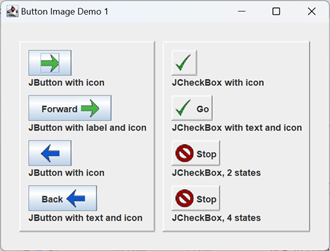

Digression: Buttons with Images
We are not going to be putting images on our buttons in this project, but, in case you're interested in doing so, here is a quick discussion of how to do it.
To add an image
to a component,
first it has to be
formatted as an icon.
The quickest way
is to use
the ImageIcon(String path) constructor,
where path is the path
to an image file
in any of the common formats:
ImageIcon icon = new ImageIcon( "images/Forward.png" );
However, this constructor
won't tell us
whether or not
the image indicated by the path
was found
and correctly loaded.
I prefer to create a BufferedImage first,
then use that to create the icon.
The GUI pictured at right
was created using
application ButtonImageDemo1
in the project sandbox;
the icons in the GUI
were formulated using:
private ImageIcon getImageIcon( String path )
{
File file = new File( path );
ImageIcon icon = null;
try
{
BufferedImage image = ImageIO.read( file );
icon = new ImageIcon( image );
}
catch ( IOException exc )
{
exc.printStackTrace();
System.exit( 1 );
}
return icon;
}
If ImageIO.read fails it will throw an IOException which we can then catch.